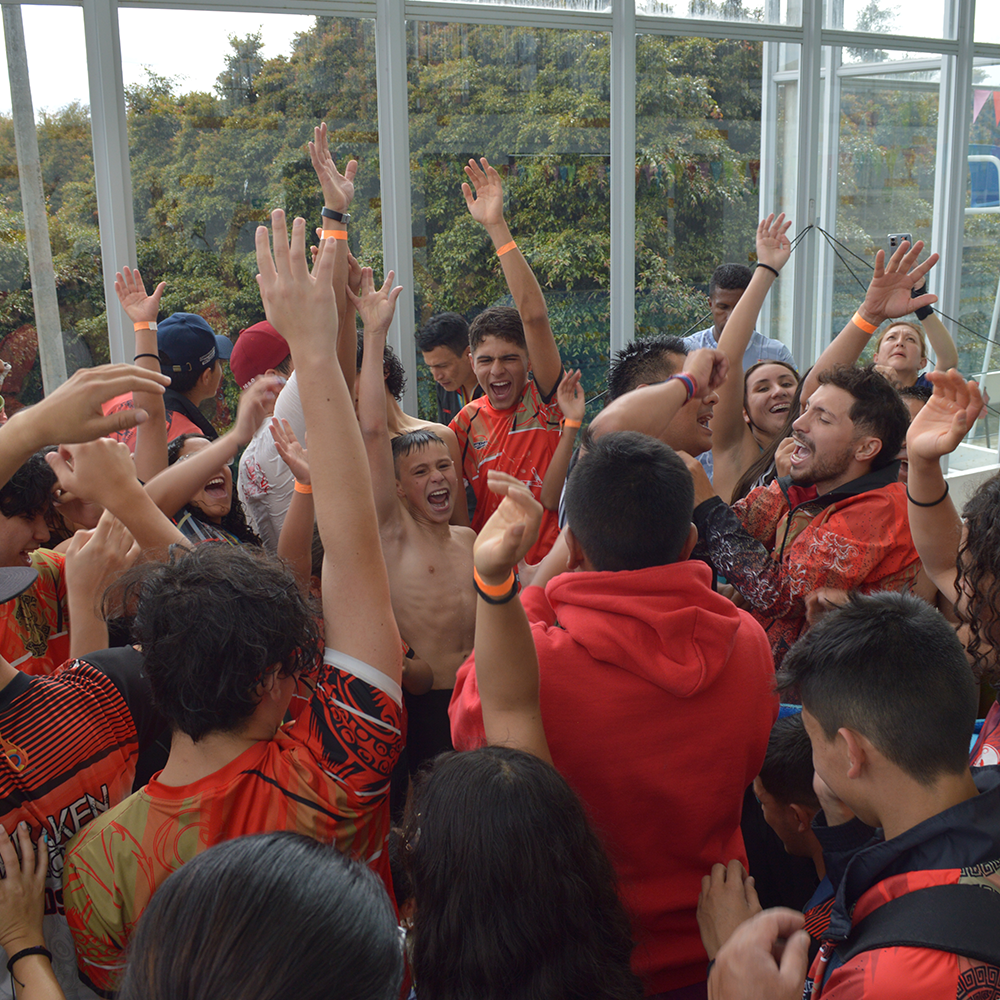

El club de Natación inició en el mes de diciembre del año 2008 durante la participación del festi-torneo del Club Campestre Cafam, donde concursamos con 1 Nadador. En diciembre de este mismo año, se tomó la decisión de conformar un grupo que representaría la natación de Sabana de Occidente, ya que representar a un solo municipio no ayudaría para tener un gran equipo, teniendo en cuenta la cantidad de habitantes de la región.
Durante la etapa inicial, se buscaron escenarios donde practicar y se realizaron los entrenamientos en clubes privados y piscinas de colegios. En el municipio de Madrid comenzó el sueño, con un total de 3 nadadores y llegamos a competir con 25 en torneos Interclubes de organizaciones tan importantes como el Gimnasio Moderno de Bogotá, el Club los Búhos, los Arrayanes Club, Club Campestre Cafam, Club la Hacienda, conformándonos como club con reconocimiento deportivo y obteniendo nuestra primera imagen:

El camino del Kraken siguió con representaciones en las competencias Iberoamericanas FIDES de algunos niños durante 2008 y 2009. Seguidamente en el 2010 nuestros nadadores paralímpicos inician su etapa de logros, obteniendo la primera medalla internacional para nuestro club. Dentro de los nadadores convencionales, los logros comienzan a llegar desde el 2010 con clasificaciones a selecciones departamentales y representaciones en torneos nacionales Interligas en las ciudades de Medellín, Cali, Armenia, Cúcuta, Palmira y Cartagena. Desde ese momento, no hemos parado de obtener esas clasificaciones con nuestros deportistas, representando también a Cundinamarca en la final Nacional de Juegos Supérate Intercolegiados con los deportistas y también con su entrenador, que ha sido llamado en varias ocasiones a dirigir la selección departamental en Torneos Interligas, Intercolegiados y Juegos deportivos Para nacionales.
Hoy nuestro objetivo es claro, continuar con el éxito de nuestro programa en la región, continuar dentro de los mejores del departamento, seguir subiendo posiciones en el ranking departamental y lograr clasificaciones a la selección Nacional, así como lograr los recursos para construir nuestro propio escenario deportivo en el Occidente de la Sabana.